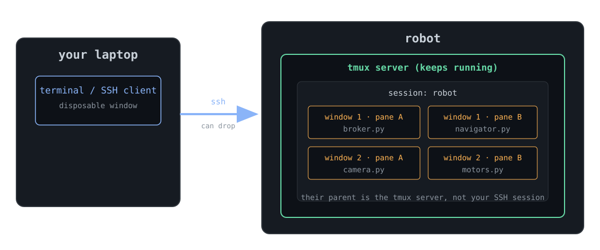
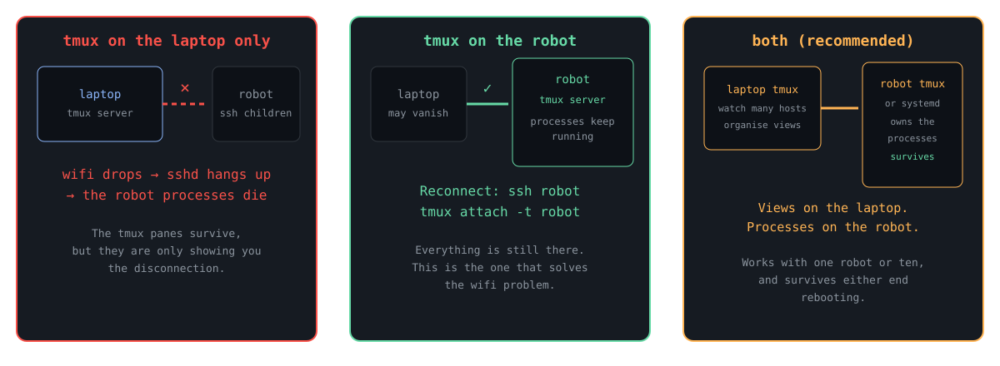

...which is really a talk about tmux, a little about herdr, and why your robot's processes should not die when the wifi does.
Every process you launch over SSH is a child of
sshd on the robot. When the link drops, sshd hangs up.
The children get SIGHUP.
Pasting commands from a cheat sheet is the same failure mode with extra steps: the launch sequence lives in a scrollback buffer.
GNU screen got the model right in 1987: a server owns the processes; your terminal is just a client.
screen -S navigator # start a named session
screen -ls # list sessions
screen -r navigator # attach
Ctrl-a d # detach
screen -S navigator -X stuff $'python -m vnavsrun.navigator node\n'And the real robocars2026/launch/ framework
already does this: one session per node, ordered startup, and a shell that
stays open after a crash.
The problem is the interface to the idea:
tmux is the same idea with better ergonomics — and a scripting interface that is pleasant to read.

tmux ls lists sessions; tmux attach -t robot gives you a new client.| What | Command |
|---|---|
| Start a named session | tmux new -s robot |
| List sessions | tmux ls |
| Attach | tmux attach -t robot |
| Detach | Ctrl-b d |
| New window | Ctrl-b c |
| Split right / down | Ctrl-b % · Ctrl-b " |
| Move / zoom a pane | Ctrl-b arrow · Ctrl-b z |
| Kill the session | tmux kill-session -t robot |
Ctrl-b is the prefix:
press it, release, then one more key. Ctrl-b ? shows every binding.
| screen | tmux |
screen -S x | tmux new -s x |
screen -r x | tmux attach -t x |
Ctrl-a d | Ctrl-b d |
Ctrl-a c | Ctrl-b c |
-X stuff | send-keys |
Ctrl-b d. Close the window.tmux attach -t demo.The counters did not restart.
They did not pause.
They never knew you left.
SESSION=robot
tmux new-session -d -s "$SESSION" -n robot -c ~/robot
tmux split-window -t "$SESSION:" -c ~/robot
tmux select-layout -t "$SESSION:" tiled
tmux attach -t "$SESSION" # or Ctrl-b d and walk awaypython3 camera.py # the node runs
ec=$? # it dies (USB cable, bug, OOM)
printf '[camera] exited %s\n' "$ec"
exec bash --rcfile ~/.robot.rc # prompt + historysleep./launch_broker # first
./launch_lidar # waits for :7777
./launch_camera # waits for :7777
./launch_navigator # waits for :7777
./launch_motors # waits for :7777Each script waits for the port to answer, not for a guessed number of seconds. For ROS, wait for the topic instead — the Smarty example does exactly that.
NEEDS_PORT=7777
source _launch_common.sh # the wait + the wrapper live here| Tethered | Headless | |
|---|---|---|
| teleop | yes | skipped |
| attaches | yes | no |
| logs | screen | screen + files |
| started by | a human | cron / systemd |
Same script. It decides from whether stdin/stdout
are a terminal, or you pass --tethered / --headless.
[Service]
ExecStart=.../robot_up.sh --headless
ExecStop=.../robot_down.sh
RemainAfterExit=yes| window | panes |
|---|---|
robot | base · lidar |
sensors | camera · talker |
slam | display · toolbox · turtlebot · rviz |
drive | teleop · map-saver (ready) |
The map saver is a shell with the command in history. When the map looks good, focus it, press Up-arrow, Enter.
Profiles: mapping and navigation.
Hosts, map paths, and commands live in one smarty.conf.

ssh robot is
still just an SSH client. It can show you the disconnect; it cannot prevent it.
Use tmux (or systemd) on the robot for survival, and tmux on the laptop for
visibility.A terminal workspace manager built for coding agents. Same client/server idea as tmux, plus a sidebar that knows which pane contains an agent and whether it is working, blocked, or done.
herdr pane list
herdr pane read w1:p4
herdr agent prompt reviewer \
"Which node is stuck?"Start the agent first with
herdr agent start reviewer --pane w1:p6.
New (0.9.x), Linux/macOS. Install it on the robot and the
laptop if you want the sidebar there. tmux remains the universal fallback;
herdr is the version where the multiplexer is an API an agent can drive.
That is enough to stop losing work to a wifi drop — if the session runs on the machine doing the work.
One script. One session. One pane per process. A real readiness check. A pane that survives a crash.
git clone https://github.com/almargolis/tmux-for-robots.git
cd tmux-for-robots/examples/01_tmux_by_hand
./try_it.sh
cd ../02_tmux_robot
./robot_up.shRead smarty/ for the
cheat-sheet-to-script translation, and examples/herdr/ for the
agent version.
Slides: slides/index.html · press
S for speaker notes · ? for help